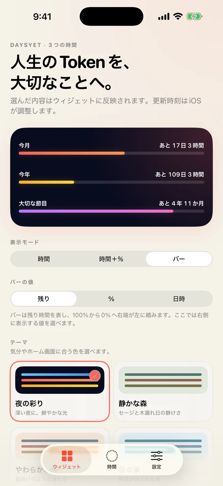
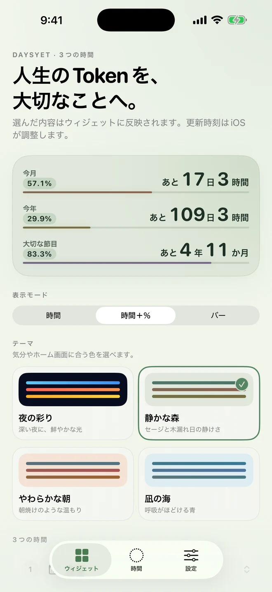
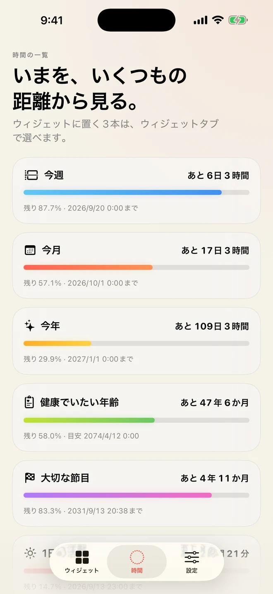
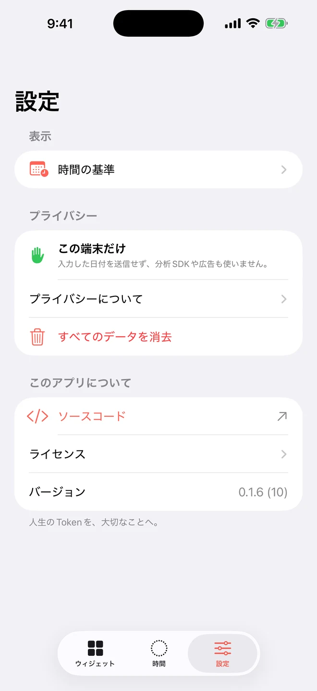

選べる3つの時間
今週・今月・今年・健康でいたい年齢から選択。必要になったら、大切な日の起算日と目標日時も追加できます。
今週、今月、今年、人生の目標。大切な3つを選び、残り時間は数字で、ここまでの歩みは左から伸びる色と経過割合で、静かに見渡せます。

画面の操作はシンプルです。見たい3つの時間、表示モード、テーマを選ぶと、プレビューへそのまま反映されます。バー表示では右側の値も選べます。

大きな残り時間に、経過割合と左から積み重なるバーを添えて確認。時間だけ、バーだけの表示にも切り替えられます。

今週から人生の目標までを一覧で確認。ウィジェットに置く3本は、ここから選べます。
暦と自分の目標を1つに。表示する時間、モード、値、テーマは、アプリ全体でもウィジェットごとでも選べます。
今週・今月・今年・健康でいたい年齢から選択。必要になったら、大切な日の起算日と目標日時も追加できます。
時間だけ、残り時間・経過割合・バーの複合表示、バーだけを切り替え、鮮やかな夜や穏やかな森・朝・海から色を選べます。
SmallとMediumに対応。特定のウィジェットだけ内容、表示、テーマを上書きできます。
アプリの「ウィジェット」タブで、表示したい3本を並べます。
3つのレイアウトと4つのテーマから、心地よい組み合わせを選びます。
DaysYetウィジェットを追加すると、選択した内容が表示されます。
要点: DaysYetは利用者データを収集・送信せず、追跡、広告、分析SDKを使用しません。入力した情報は端末内だけに保存されます。
設定画面から保存内容を確認し、いつでもすべてのデータを消去できます。

生年月日、健康でいたい年齢、目標名、目標の起算日と目標日時、ウィジェットの項目、表示モード、値の形式、テーマを保存します。これらは時間の計算、アプリ画面、ウィジェット表示にだけ使います。
AppleのApp Group機能を使い、端末内でアプリとWidget Extensionが共有する専用領域へ保存します。開発者のサーバー、クラウド、分析・広告事業者、その他第三者へ送信せず、アカウントも作成しません。
ホーム画面のウィジェットは、端末を見ることのできる人の目に触れる場合があります。
追跡、行動分析、広告、第三者SDKを使用しません。AppleがApp StoreやOSの提供に伴って処理する情報には、Appleのプライバシーポリシーが適用されます。
「健康でいたい年齢」は利用者自身が決める計画上の目標です。HealthKitへアクセスせず、医学的診断、健康測定、治療、実際の寿命予測を行いません。外部の健康統計データも同梱していません。
設定画面の「すべてのデータを消去」で保存情報を直ちに削除できます。アプリ削除後のApp GroupデータはOSが管理します。開発者はアプリから利用者データを受信・保存しないため、開発者へ削除請求を行う対象はありません。
利用者がソースコード、プライバシー、サポートへのリンクをタップした場合に限り、システムブラウザが開きます。外部通信、クラウド同期、クラッシュ解析、購入検証サーバー、HealthKit、第三者SDKなどを追加する場合は、この方針、Privacy Manifest、App Store Privacy回答を事前に更新します。
お問い合わせ先はsupport@hinoshiba.comです。利用者が任意にメールを送信した場合、送信元メールアドレスと本文を、返信および必要なサポート対応のために利用します。個人の日付、健康情報、認証情報、秘密鍵は送らないでください。脆弱性を報告する場合は、メール本文に詳細を含めず、安全な報告経路を依頼してください。
DaysYetは、VoiceOver、Dynamic Type、Dark Interface、コントラスト設定、色だけに依存しないラベルを考慮して設計しています。
各表示はタイトル、残り時間、経過割合、目標日時を一つの意味ある要素として読み上げます。視覚表示にも常にテキストを残し、色だけに頼りません。
利用できない操作や改善点がある場合は、端末、OS、利用している支援機能、再現手順を添えてお知らせください。個人の日付は送らないでください。
まずはよくある質問をご確認ください。解決しない場合は、support@hinoshiba.comへお問い合わせください。
ホーム画面の空いている場所を長押しし、「編集」からウィジェットを追加します。DaysYetを検索し、小または中サイズを選んでください。
アプリのウィジェットタブで3本を選ぶと、変更がウィジェットへ反映されます。特定のウィジェットだけ変える場合は、そのウィジェットを長押しして「ウィジェットを編集」を開き、「アプリで選んだ3本を使う」をオフにします。
アプリのウィジェットタブで「時間」「時間＋％」「バー」から選び、4つのテーマを切り替えられます。「時間＋％」では、各行に残り時間、経過割合、左から伸びる進捗バーを一緒に表示します。特定のウィジェットだけ別の表示や色にする場合は、ホーム画面から「ウィジェットを編集」を開いて上書きできます。
アプリの「時間」タブから「人生の基準を編集」を開き、「大切な日」で起算日と目標日時を設定します。起算日を0%として、目標日時に100%となる経過割合を計算します。
一度DaysYetを開いて設定を保存し直し、ウィジェットが追加されていることを確認してください。OSが更新時刻を調整するため、常に秒単位で更新されるものではありません。改善しない場合は端末・OS・アプリバージョンを添えてsupport@hinoshiba.comへお問い合わせください。
DaysYetの設定タブから「すべてのデータを消去」を選びます。DaysYetに入力したデータは開発者のサーバーに保存されません。
DaysYetは、時間の進捗と利用者自身が設定した目標を表示する個人向け情報ツールです。表示は保証、助言、診断、医療行為、または将来の出来事の予測ではありません。
入力内容、ウィジェットを見える場所へ置くこと、表示された情報に基づく判断は利用者の責任です。重要な期限は公式情報や一次資料でも確認してください。
OS、WidgetKit、端末設定などにより更新時刻や表示が変わることがあります。適用法で認められる範囲で、機能の継続、完全性、特定目的への適合を保証しません。セキュリティ、法令、品質のために機能を変更・終了する場合があります。
ソースコードにはApache License 2.0が適用されます。DaysYetの名称、ロゴ、App Icon、Store素材は同ライセンスの対象外です。詳細は公開リポジトリをご覧ください。
製品についてのご質問は、個人の日付を含めずにsupport@hinoshiba.comへお送りください。